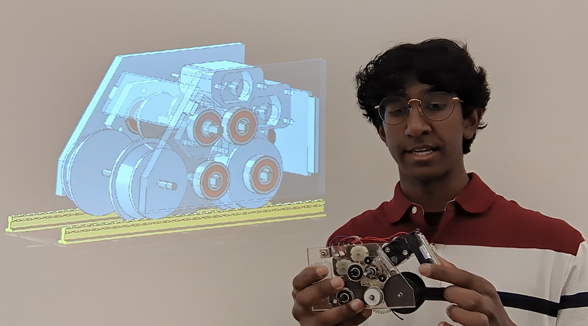

MECH 223 Rail Hauler
A load-carrying rail vehicle, built by a team of five in one term — and the version-control system I set up so five people could work on the same assembly without wrecking it.

Problem
MECH 223 is UBC Mechanical Engineering's second-year design-build course. Teams take a vehicle concept from a blank assembly to a working physical prototype in a single term, on a shared budget and a hard deadline. Our brief: a rail-bound hauler — a vehicle that rides a fixed track and carries a payload from one end to the other, judged on how reliably it could do that, lap after lap.
The engineering problem wasn't any one part. It was that five people needed to design interdependent pieces — chassis, drivetrain, the wheel-to-rail interface, the payload mount — at the same time, in the same CAD assembly, without quietly breaking each other's work.
Concept & Design
We started from layout sketches and worked out how load, drivetrain, and structure would share the same small footprint. The vehicle had to stay inside the track's clearance envelope, keep its payload from shifting in transit, and carry enough of its mass low and centered that it wouldn't ride up off the rail under power. Those three constraints fought each other more than any single one was hard on its own, and most of the early design cycles were spent trading off between them rather than solving any one in isolation.
We iterated the layout in CAD before committing to fabrication drawings — cheaper to move a mounting boss around on screen than to remachine it.
CAD & Fabrication
I modeled the full mechanical assembly in SolidWorks — chassis, wheel trucks, drivetrain mounts, payload bed — and produced the fabrication drawings the team machined and cut from. We split manufacturing across three processes, matched to what each part actually needed rather than whatever was easiest to draw:
- Machining for load-bearing metal parts — axles, mounts, anything needing a tight tolerance or real strength
- Laser cutting for flat structural panels, where repeatability and turnaround mattered more than complex geometry
- 3D printing for low-load brackets and the wheel-to-rail interface fixtures, where geometry was the priority and load was not
That split kept the schedule realistic — we weren't waiting on the machine shop for parts that a printer could turn around overnight, and we weren't trusting a printed part with a load it wasn't suited for.
Keeping the CAD Sane
Five people editing the same SolidWorks assembly is a merge-conflict problem, except SolidWorks doesn't have merge conflicts — it has silently broken references and someone's afternoon of work overwritten by a file save. Before we'd cut a single part, I set up a self-hosted SVN server to host the team's CAD, with a folder structure per subassembly and a check-out/check-in workflow so two people couldn't edit the same file at once.
It's the least visible part of this project and the part I'd point to first. It meant every part had a version history, nobody's local copy of the assembly could silently drift from everyone else's, and we lost zero work to file conflicts for the rest of the term — which, on a five-person team sharing one CAD tree under a deadline, is not the default outcome.
Assembly & Testing
Once parts came back from machining, laser cutting, and printing, we brought them together on the bench — checking fits, adjusting anything that didn't line up with the drawing, and wiring up the drivetrain. From there it was track runs: load the payload, run it end to end, see what shifted, what dragged, what came loose, and fix it before the next run.
Results
The vehicle carried its payload across the track reliably, on schedule, having gone through a full design–build–test cycle as a team. The version-control setup outlived its original purpose too — it's the reason we could tell, after the fact, exactly which revision of which part went into the vehicle that ran.